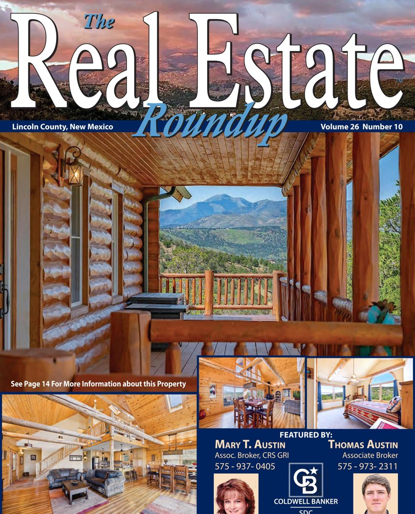

$1,300,000
5 Bedroom Property in Sierra Blanca
5 bd · 5 ba
Sierra Blanca, New Mexico
MLS #134464
$1,300,000
5 Bedroom Property in Sierra Blanca
5 bd · 5 ba
Sierra Blanca, New Mexico
MLS #134464
Ruidoso · Lincoln County · Otero County · Est. 2000
Mountain homes, in print for 26 years.
The Real Estate Roundup is southern New Mexico's free monthly real estate magazine. Every home below is reproduced from the current print edition — the October 2026 Lincoln County Edition is on the site now.
Browse 351 Lincoln County homes Read the magazine351Lincoln County listings in the October 2026 print edition
$399,000Median asking price this month
2Monthly county editions, in print since 2000
This month's editions
Two county editions every month, printed and distributed free around southern New Mexico. Website listings are taken directly from the print pages.
Volume 26 · Number 10 · October 2026
Lincoln County Edition
Ruidoso, Alto, Capitan, Carrizozo, Lincoln and the Hondo Valley — 351 homes from this month's print edition, 328 with photos.
Browse Lincoln County homes → Volume 21 · Number 10 · October 2026Otero County Edition
Alamogordo, Cloudcroft, Tularosa, La Luz and Timberon. This month's Otero listings are being prepared for the site.
About the Otero County Edition →Browse by area
Areas as named in the print edition.

This month's cover home
10.0 Acre Property in Sierra Blanca
$895,000
['10.0 acres']
YOUR MOUNTAIN DREAMHOME ON 10 ACRES! Panoramic views up the valley toward Sierra Blanca from indoors or out. Custom 3/2½ features an open floorplan w/log beam accents. Kitchen has solid surface counters, stainless appliances, large island & adj. dining. Primary bdr. has deck access, custom bath & dual closets. Loft can serve as den/office/studio. Large guest bdrs. share full bath. Huge game/rec room, oversized garage. Whole house generator + rain catchment & water storage. Double lots provide room to bring your horses, build a shop or just enjoy the privacy. Close to the park, riding trails along the river. Furnished & ready to enjoy. MLS# 134569 $895,000 .
Featured on the cover of the October 2026 Lincoln County Edition (page 14).
From this month's Lincoln County Edition
A few of the homes in the October 2026 issue — the full edition is one click away.
$1,300,000
5 Bedroom Property in Sierra Blanca
5 bd · 5 ba
Sierra Blanca, New Mexico
MLS #134464
 $699,000
Property
3 ba
MLS #132977
$699,000
Property
3 ba
MLS #132977
 $498,000
Property
MLS #134228
$498,000
Property
MLS #134228
 $449,000
3 Bedroom Property
3 bd · 2 ba
MLS #134476
$449,000
3 Bedroom Property
3 bd · 2 ba
MLS #134476
 $395,000
Property in Carrizozo
Carrizozo, New Mexico
MLS #134271
$395,000
Property in Carrizozo
Carrizozo, New Mexico
MLS #134271
 $373,500
3 Bedroom Property
3 bd · 2 ba
MLS #133229
$373,500
3 Bedroom Property
3 bd · 2 ba
MLS #133229
 $289,000
2 Bedroom Property
2 bd · 2 ba
MLS #133478
$289,000
2 Bedroom Property
2 bd · 2 ba
MLS #133478
 $239,000
2 Bedroom Property
2 bd · 1 ba
MLS #134540
$239,000
2 Bedroom Property
2 bd · 1 ba
MLS #134540